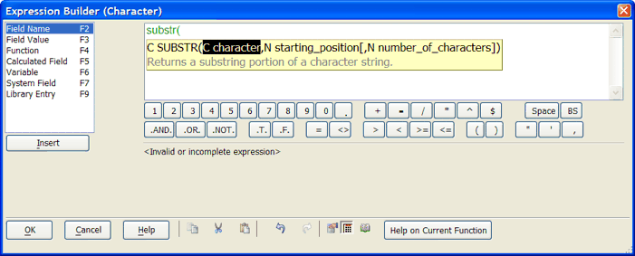

Functions and Expressions
Functions are pre-defined operators which can be used in an expression to perform an operation. Expressions, which are similar to mathematical equations, are used throughout Alpha Five to specify search criteria, put records in a particular order, link tables in a set, and more. Because expressions can sometimes be a bit complicated to create, Alpha Five provides a variety of tools that either write expressions or help you write them. While you do not need to know everything about expressions to use Alpha Five, knowing how to create them gives you greater control over your information.

Alpha Five's Expression Builder
The Expression Builder is one of many tools available for designing complex and useful expressions.
See Also
Supported by
Alpha Five Version 5 and Above